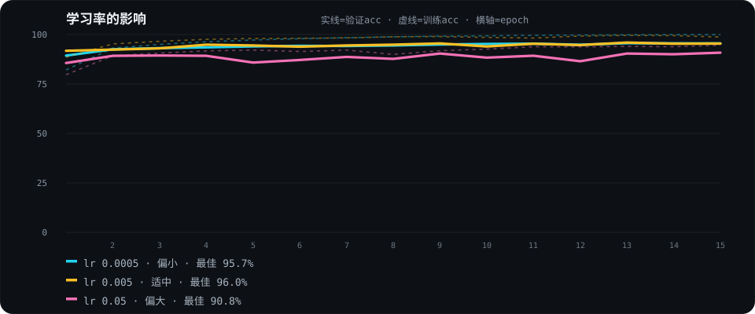
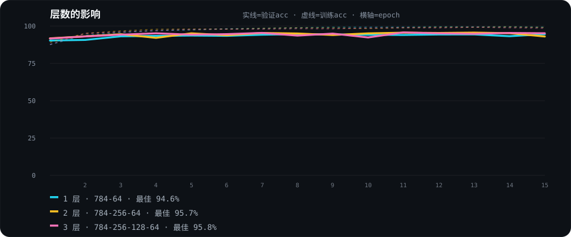
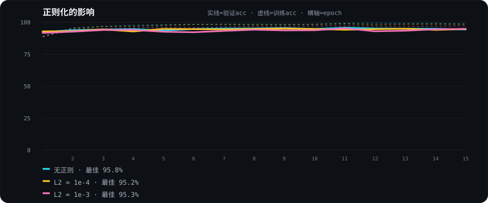

深度学习课程项目 · 原理推演 → 代码实现 → 持续迭代
badcase 标注后回炉重训，重新进入训练链路 → 形成闭环
起点不是选型——硬编码规则走不通：没有一条 if 像素 > 200 能认出所有笔迹，只能让网络自己学。
不是回归，不是聚类——把每个数字当作一个类别
28×28 灰度网格，每个方格一个数值，共 784 个输入
输入加权处理后决定是否传递，逐层提取形状
784 个像素，谁该打高分、谁该打低分？
训练找参数组合，梯度下降微调权重，正确分数越来越高。
20 万参数，每个都要单独算影响吗？
反向传播多米诺倒推 = 分锅：这层传入什么 × 上层传来什么误差。链式法则把 21.8 万参数逐个试，从 O(N²) 降到一次算完。
# CE+Softmax 合体梯度 = (P - y)/Nd = probs.copy(); d[arange(N), y] -= 1; d /= Nfor i in range(L-1, -1, -1): if i < L-1: da = da * (z > 0) # 非输出层过 ReLU dW[i] = x[i].T @ da # 权重梯度 = 本层输入ᵀ × 上游 da = da @ W[i].T # 往上一层传线性层叠加会「合并」，如何打破？
ReLUmax(0, x)，正数放行、负数清零。Sigmoid 两端导数趋 0，梯度传着传着就消失；ReLU 正区斜率恒 1，代价是 10–20% 神经元死亡。
ReLU 砍掉负数，神经元会废掉吗？
He 初始化精确补偿。全零会退化成一个神经元，随机可能全员落负区死亡；He 用方差 2/fan_in 补偿砍掉的一半，点亮约一半神经元。
# 正向: 线性变换 + ReLU 激活z = a @ W[i] + b[i]a = np.maximum(0, z) # 正数放行、负数清零# 反向: ReLU 导数 = z > 0da = da * (z > 0)# He 初始化: 方差 = 2 / fan_infan_in = layer_sizes[i]W = rng.randn(fan_in, fan_out) * np.sqrt(2.0 / fan_in)b = np.zeros(fan_out)怎么衡量「猜得好不好」，误差信号从哪来？
交叉熵 CE梯度 = 预测 − 答案，错得越离谱信号越强。MSE 有隐藏坑：错得越狠，梯度被 P(1−P) 压得越弱。
步长怎么定，怎么不来回震荡？
Adam 针对 SGD 三坑——峡谷震荡 / 尺度不均 / 鞍点停滞，用动量记方向 + 自适应步长 + 偏置校正一一化解。
# 交叉熵: L = -log(P_correct)loss = -np.mean(np.log(probs[arange(N), y] + 1e-12))# CE+Softmax 合体梯度 = (P - y)/Nd = probs.copy(); d[arange(N), y] -= 1; d /= Nm = b1*m + (1-b1)*g # 动量 → 消震荡v = b2*v + (1-b2)*g**2 # RMSprop → 自适应步长mh = m/(1-b1**t); vh = v/(1-b2**t) # 偏置校正w -= lr * mh / (np.sqrt(vh) + eps)256 → 64 逐层递减 = 信息瓶颈：太窄挤掉信息，太宽直接背答案。
# 线性变换 + ReLU 激活for i in range(num_layers): z = a @ W[i] + b[i] a = z if i==last else np.maximum(0, z)# Softmax → 概率分布e = exp(z - z.max()) # 数值稳定probs = e / e.sum(1, keepdims=True)for epoch in range(epochs): for X, y in batches: probs = net.forward(X) # 前向 net.backward(y) # 反向 net.update_params(lr) # Adam 更新固定 12K 训练子集，每次只调一个超参数，观察准确率怎么变



笔画粗细、大小、位置都和 MNIST 的 28×28 特征不一致，直接丢进去会崩。
把笔画缩到 MNIST 的尺度、搬到画布中心，对齐训练时的分布。
模拟 MNIST 的抗锯齿，去掉最近邻缩放的硬边缘。
权重导出成 model.js，推理在浏览器 JS 完成——零后端、可离线、可静态托管。
// 预处理: 边界框 → 缩放 → 居中scale = Math.min(20/h, 20/w)result = gaussianBlur(result) // 高斯平滑抗锯齿// 前向: 逐层 线性 + ReLU / Softmaxfor(let i=0;i<3;i++){ z = a·W[i]+b[i] a = (i===2) ? softmax(z) : relu(z) }return { probs, prediction, a1, a2 }恢复率 = badcase 正确分类比例 · MNIST 测试集准确率稳定 97-98%
训练第 11 类「非数字」，合成 6000 个样本扩充训练集
误判样本以正确标签回炉重训，v1(0%) → v6(100%)
124 负 + 22 正双轨标注，负样本纠错、正样本加固边界
在这个场景里，针对性标注 > 盲目扩充数据